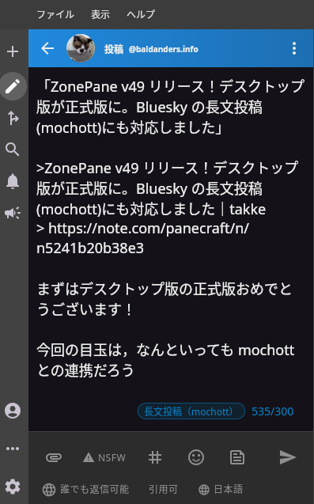
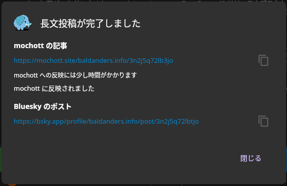
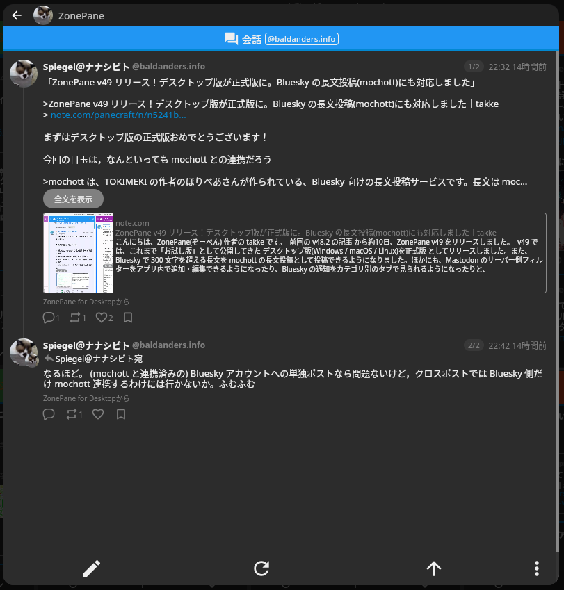
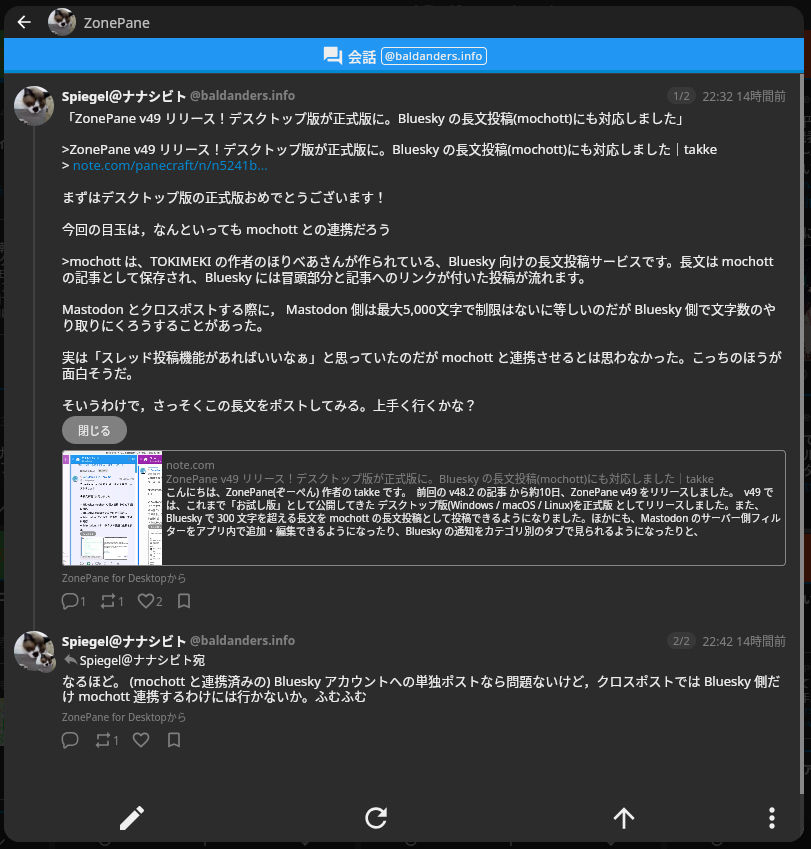

ZonePane で Bluesky に長文を投稿する（mochott 連携）

改めて紹介すると ZonePane（ぞーぺん）は Mastodon/Misskey/Bluesky/タイッツー/mixi2 に対応したマルチ SNS クライアントである。 Android および iOS/iPad に対応したスマホアプリと Windows/macOS/Linux 向けのデスクトップアプリが提供されている。
この ZonePane の v49 が昨日リリースされた。
主な変更点は以下の通り（ブログ記事から抜粋）。
- Bluesky: 300文字を超える長文を投稿できるようになった（mochott 対応）
- デスクトップ版（Windows / macOS / Linux）が正式版に昇格
- Mastodon: サーバー側のフィルターをアプリ内で追加・編集できるようになった
- Mastodon: 「トレンド」タブで話題の投稿を表示するようになった
- 投稿画面でアカウントを切り替えても、添付ファイルを引き継げるようになった
- Bluesky: 通知のカテゴリ別タブ・プロフィールリンクの編集などに対応した
- Mastodon・Misskey: 投稿の編集で添付ファイルを再アップロードしないようにした
- タイッツー・mixi2 の改善
- その他の改善・不具合修正
まずはデスクトップ版が（お試し版から）正式版に昇格したとのことで，おめでとうございます。 これで大手を振ってデスクトップ版が使える（いや，今までも普通に使ってたがw）。
以降では mochott との連携機能に絞ってメモがてら紹介する。
mochott は Bluesky 用 Web クライアント TOKIMEKI の作者が提供するブログサービスで，元々 TOKIMEKI と mochott はシームレスに連携しているそうだ1。 今回の ZonePane のバージョンアップでは TOKIMEKI と同じように mochott とシームレスに連携できるようになった。
早速デスクトップ版で試してみよう。 入力はこんな感じ。


下の方に「長文投稿（mochott）」のマークが表示されているのがお分かりだろうか。 これをポストすると以下のようなダイアログが表示される。


ポストした内容は Bluesky 公式 Web クライアントではこのように見える。
「ZonePane v49 リリース！デスクトップ版が正式版に。Bluesky の長文投稿(mochott)にも対応しました」
>ZonePane v49 リリース！デスクトップ版が正式版に。Bluesky の長文投稿(mochott)にも対応しました｜takke > note.com/panecraft/n/n5241b…
まずはデスクトップ版の正式版おめでとうございます！
今回の目玉は，なんといっても mochott との連携だろう
>mochott は、TOKIMEKI の作者のほりべあさんが作られている、Bluesky 向けの長文投稿サービスです。長文は moc…もっと見る
[image or embed]— Spiegel＠ナナシビト (@baldanders.info) 2026年11月17日 22:32
「もっと見る」のリンクから mochott 側の投稿ページに行ける。
同じ記事を ZonePane で表示するとこんな感じ。


返信部分は無視してほしい。 「全文を表示」ボタンを押すと mochott に投稿した全文が表示される。


おそらく PDS にある mochott のデータ（standard.site Lexicon）を参照しているのだろう。 ちなみに mochott 側の記事は後から修正することができるが，この場合 ZonePane 側の全文表示では「投稿後に編集されています」と表示される。 素晴らしい！
なお ZonePane の目玉である複数サービスへのクロスポスト機能を使う場合には mochott 連携が使えない。 ポストするサービスの最短文字数でカウントして，それを超えるとポストできない仕様になっている。 たとえば mixi2 は149.3文字で2，こちらに合わせる場合はしょうがないけど，たとえば Misskey は3K文字書けるし Mastodon も（サーバによるけど）1K文字以上書けるところが多い（うちは5K文字まで書ける。 Fedibird は560文字）。
mochott との連携で Bluesky の文字制限は事実上なくなったので，クロスポストでも対応してほしいけど… いや，実装が面倒くさそうか？
私は Mastodon というか Fediverse のアプリケーション・サービスが ActivityPub で緩く繋がってる状態をとても気に入っているが（私の Mastodon サーバが「ぽつんと一軒家」みたいな状態でも外と繋がっていられるのはこれのおかげ），atproto で繋がっているアプリケーション・サービスはユーザアカウントにデータが集約されるため，より密な連携が期待できる。 また ZonePane のようにサービス・プラットフォームを跨いで閲覧・投稿できるクライアントアプリは，今までにない景色を見せてくれる。
私は最近，サービス・プラットフォーム内部で多様性を担保するのは無理だし，そこに固執する必要はないと思えるようになってきた。
まぁ 𝕏 のように何かと言いがかりをつけて気まぐれに BAN するようなサービスは論外だが，（ひとつのプラットフォームに億単位の莫大なユーザを包摂するのではなく）サービス・プラットフォームを跨いで
というわけで，ブログとソーシャル・メディアをシームレスに繋ぐというアプローチは，非常に面白いと思っている。 TOKIMEKI も含めて，今後の展開に期待したい。
ブックマーク
- デスクトップ版ZonePaneが正式リリースされBlueskyの300文字以上の投稿に対応 – あたしンちのおとうさんの独り言
- Leaflet と The Atmosphere
- AT Protocol & ActivityPub 関連サービスの利用について
参考

- もうすぐ絶滅するという開かれたウェブについて 続・情報共有の未来
- yomoyomo (著)
- 達人出版会 2017-12-25 (Release 2019-03-02)
- デジタル書籍
- infoshare2 (tatsu-zine.com)
- 評価
[Comment] WirelessWire News 連載の書籍化。感想はこちら。祝 Kindle 化！
reviewed by Spiegel on 2018-12-31

- THIS IS FOR EVERYONE(ディス イズ フォー エブリワン) | 東洋経済STORE
- 東洋経済新報社が発行する週刊東洋経済、会社四季報などの雑誌や本、統計・総覧、主催のセミナー・イベント情報をご案内しています。
- Release 2026-10-14
- 評価
[Comment] World Wide Web に関する Tim Berners-Lee の回顧録。 AI に関する言及もある。
Powered by linkcard
-
“Start Bluesky with TOKIMEKI” によると，他にも TOKIMEKI Diary, TOKIMEKI Poll, tomarigi, TOKIMEKI SPACE といったアプリがあるようで，これらを TOKIMEKI の UI で統合する形になってるっぽい。ちなみに TOKIMEKI のアンケート投票機能は ZonePane でも利用できる。 ↩︎
-
149.3を逆さから読むと3941（みくしい）となる。要らないダジャレ
orzまぁ，旧 Twitter は140文字だったし，それよりはマシかも知れないが。昔は如何に140文字以内に情報をおさめるかという，実社会では役に立たなそうなスキルが求められていた。昭和のバブル時代に言われた「名刺の裏にアイデアが書けるか」みたいな話か（笑） ↩︎